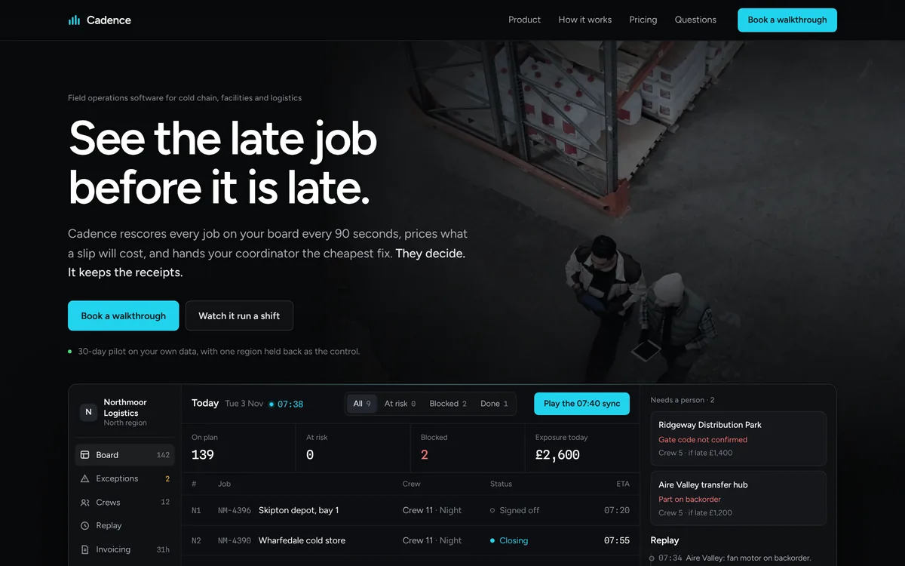
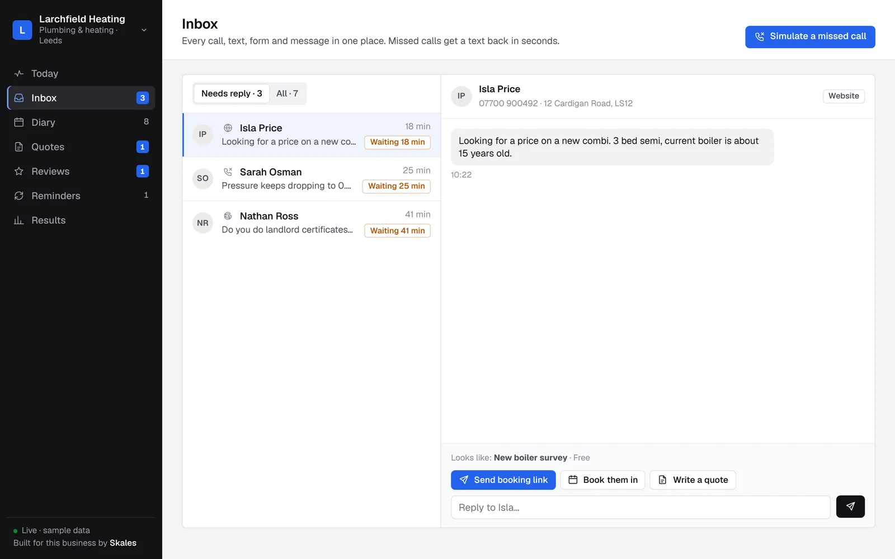
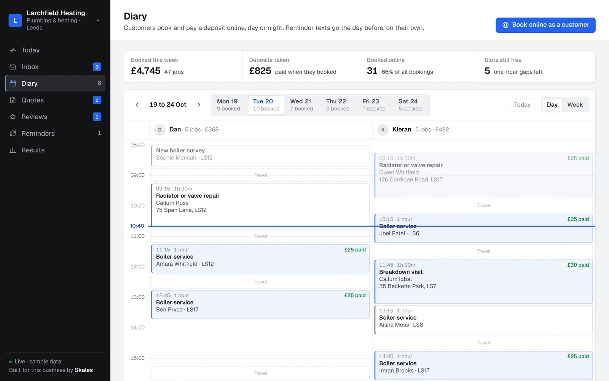
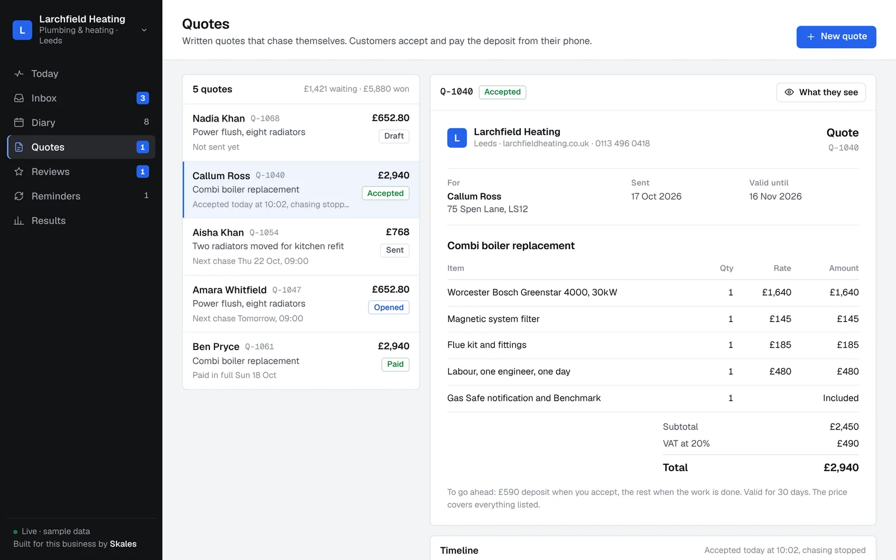
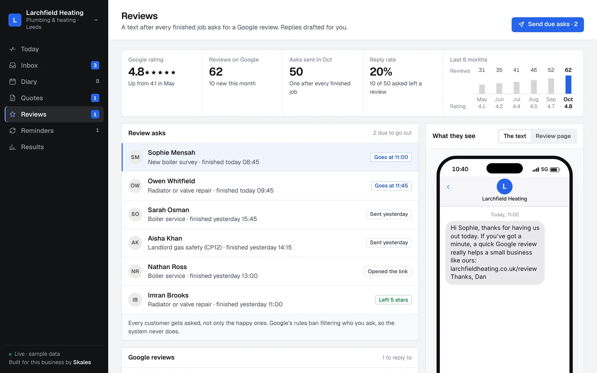
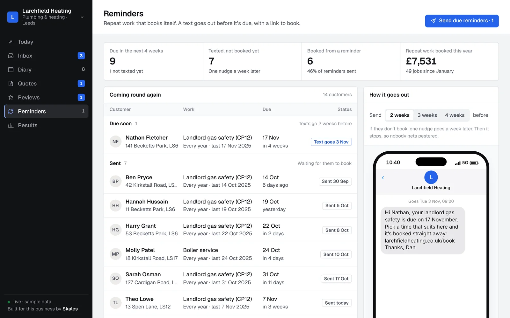
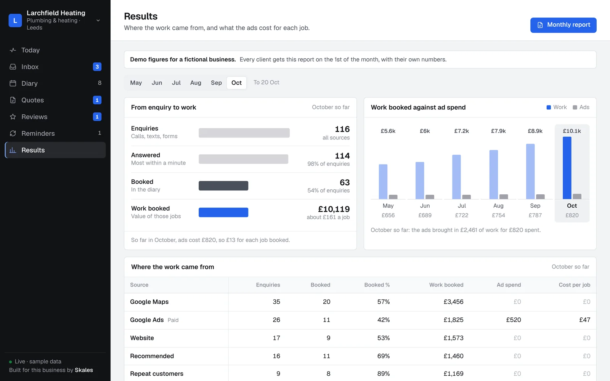

The work · every one running live
Twelve websites. One system behind them.
Each website is built from scratch for a different kind of business, and the system behind them answers the phone, books the job and follows up. The businesses are made up, so no client is on show.





Behind every website
The system
One app for the whole business. A missed call gets a text back in seconds, the customer books and pays a deposit, quotes chase themselves, and reviews and repeat work ask for themselves. Press around, it is the real thing.


Inbox and missed callsEvery call, text and form in one list. Missed calls get a text back in seconds.
Booking and the diaryCustomers book a real free time and pay a deposit. It lands in the right diary.
Quotes that chase themselvesQuotes from your price list that chase themselves until the customer answers.
Google reviewsEvery finished job asks for a review. Replies take one tap.
Reminders that rebookYearly services, MOTs and regular cuts remind the customer and book themselves.
Results and adsWhere every job came from, what it was worth, and what the ads cost per job.Open it as one of six made-up businesses
Book
These are demos. Yours would have your name on it.
A free 30-minute call with me, Tom: what is costing you work, what I would build first, and a fixed price.